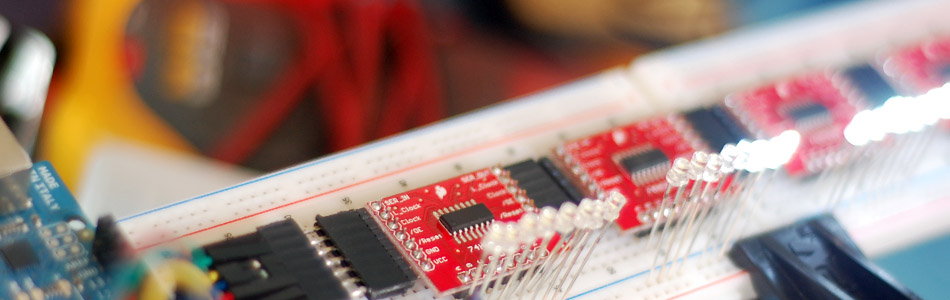

Arduino: Individually Control Shift Register Pins

The following code and library are compatible with arduino software 1.0+ ONLY. You can download the newest version of the arduino software here.
So now you find your self asking "Why?" Well... chainability! Using right-angle headers you can chain a ton of these together. AND! With the code we have for you, you get an additional 8 digital outputs per board you have connected. That means if you have 1000 of these chained together, you will be able to say "setPin 7,432 HIGH", and BAM! Just like that pin 7,432 goes HIGH. It will literally be like you have more digital outputs on your arduino, no funny business.
{kind=link}
Hooking it up
At first this board may look confusing to hookup... But just click on the illustration to get a better view of how it is hooked up. We won't be using Reset, so just connect that to power, and connect /OE to ground (enables the board). For VCC you can connect this to 3.3 or 5V on your arduino, and the outputs will just reflect this. So if you power the board with 3.3v, the outputs on the board will output 3.3v as well. We just need 3 digital pins to control the board, and after that we are done.
You can chain as many of these as you would like. I used right-angle header pins to make it modular and clean. I picked up some 7 pin right-angle headers from digikey to make it even easier. But you dont have to use header pins for this if you don't want. You can easily just wire them together too. Either way, see the illustration below to see how you do this.
{kind=link}
Code
Because it is so much easier to use a lot of these now, we wanted the code to be the same. So we made an Arduino library that is capable of controlling near 2000 of these chained together and still enable you to call each pin individually. (this library can be used with the plain 74hc959 chip as well)
The library by default will only support a chain of 25 of these. But that can easily be changed by changing one number in the file "Shifter.h" . If you find your self with a larger chain, hit us up in the discussion area, and we can help you out.
To use the library, you just need to create an instance of the Shifter library, then you have a few functions to do everything.
shifter.clear(); - This sets all of the pins on the register chain to LOW
shifter.setPin(20, HIGH) - Turn pin 20 (or whatever) HIGH/LOW
shifter.write() - Displays the changes made.
Best practice is to only call shifter.write only when you need to display the changes. This is because shifter.write() can be slow if you have a ton of these chained together (about 1ms per 10 registers (80 pins))
Make sure to check out the discussion area. We came up with a few cool sequences to test out/ play around with - including the one in the video
To make this code work, before you load the code, or even open the Arduino program, we need to place the "Shifter" folder into your Arduino Library. If you don’t know where that is by default, Look to the right.
If you click the download button to the right of “Arduino” you can download the whole thing as a zip, so you dont need to copy all the files.
Default Library Folder Location
On your Mac:: In (home directory)/Documents/Arduino/libraries
On your PC:: My Documents -> Arduino -> libraries
On your Linux box:: (home directory)/sketchbook/libraries
Video
Article taken from bildr.org with minor changes - I am the original author of this content